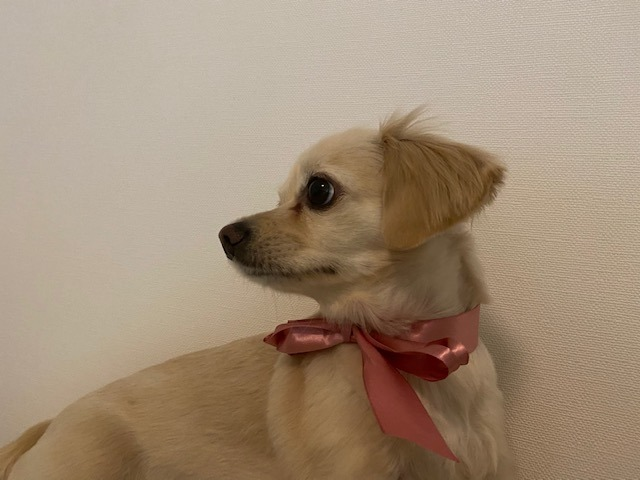
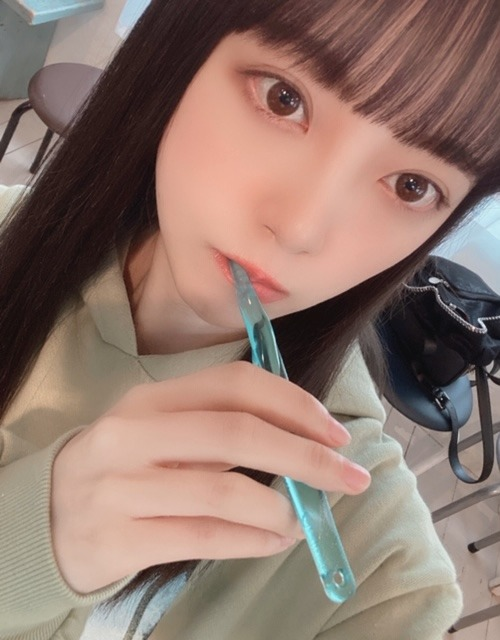

2020/0408Wedここ最近は
こんにチワワ
ここ最近はずっとゲームしてます
switchでいろんなゲームしてます
たのしい
バイオハザードうまい人の実況見たり。
バイオハザードうまい人ってかっこいい。憧れます。
私もクリア目指して頑張るぞー
あとは本を読んだり
映画を見たり
メイク勉強したり
インテリアをネットで見たり
ぽかん。
あ、あとは
オードリーヘップバーンについての本を
読み漁っています。
素敵だー
ちなみに
堀家にはチワワのニコルくんと
チワックスのプティくん

がいて毎日賑やかです☺︎
甘えん坊さんでおてんばでかわいい☺︎
みなさんは動物好きですか？
私はいつかお猿さんも飼ってみたいです
写真が無いので季節外れですがサンタさん。
みなさんのリクエストにお応えしながら
いろんなヘアメイクやっていきますね〜！
今日はどんなのにしようかなぁ
動画は@horimiona_2nd
にて
また更新します☺︎

じゃね
2020/04/08 09:12
コメント(320)
ブログ更新ありがとうございます。
質問コーナーをいつかしてください。
自分からの質問は、最近ハマっている食べ物は?です。
お体には気をつけてください。
質問コーナーをいつかしてください。
自分からの質問は、最近ハマっている食べ物は?です。
お体には気をつけてください。
ニコルとプティ可愛い！
体調管理もしっかりね
体調管理もしっかりね
こんにチワワ&チワックス♡
お家でゲームとっても楽しそう！
ヘップバーン研究も素敵ですね♪
今だからこそ出来る事もあるし、
お家で楽しんでて凄く偉いです☆
ニコルくんとプティくんも居て、
お家の中とっても賑やかですね✨
季節外れのサンタさんも可愛いし、
歯磨き姿もとっても爽やかですよ✌
毎日発信してくれて嬉しいです♡☺
お家でゲームとっても楽しそう！
ヘップバーン研究も素敵ですね♪
今だからこそ出来る事もあるし、
お家で楽しんでて凄く偉いです☆
ニコルくんとプティくんも居て、
お家の中とっても賑やかですね✨
季節外れのサンタさんも可愛いし、
歯磨き姿もとっても爽やかですよ✌
毎日発信してくれて嬉しいです♡☺
みおなちゃんブログ更新ありがとうございます！！
2匹のワンちゃん可愛すぎます！！毎日癒されますね！
私もワンちゃん1匹とフクロモモンガ1匹を飼っています！
いつかみおなちゃんに見せることができたらいいな！
これからも応援しています！大好きです！
2匹のワンちゃん可愛すぎます！！毎日癒されますね！
私もワンちゃん1匹とフクロモモンガ1匹を飼っています！
いつかみおなちゃんに見せることができたらいいな！
これからも応援しています！大好きです！
ブログ更新ありがとうございます。
質問コーナーをいつかしてください。
自分からの質問は、最近ハマっている食べ物は?です。
お体には気をつけてください。
質問コーナーをいつかしてください。
自分からの質問は、最近ハマっている食べ物は?です。
お体には気をつけてください。
未央奈ちゃんブログ更新ありがとう！
ずっと前からオードリーヘップバーンさんとローマの休日すきってゆってるよね！外国の方に憧れてるってなんか素敵だし、未央奈ちゃんの立ち振る舞い？？が綺麗でいっつも見惚れちゃいます໒꒱· ﾟ
可愛い写真もありがとう！！だいすき！
ずっと前からオードリーヘップバーンさんとローマの休日すきってゆってるよね！外国の方に憧れてるってなんか素敵だし、未央奈ちゃんの立ち振る舞い？？が綺麗でいっつも見惚れちゃいます໒꒱· ﾟ
可愛い写真もありがとう！！だいすき！
堀ちゃんブログ更新ありがとう！
ニコルくんとプティくんかわいい
自分も犬を飼いたいと思ってるよー！
最近バイオハザードやってないな、久々にやろかなー
サンタさんに癒された！！
ニコルくんとプティくんかわいい
自分も犬を飼いたいと思ってるよー！
最近バイオハザードやってないな、久々にやろかなー
サンタさんに癒された！！
チワックス初めて見ました！可愛いですね！
まぁ、うちの犬の方が可愛いけど笑
こんな時だからこそできることもあると思います！
一緒に乗り越えましょう！
まぁ、うちの犬の方が可愛いけど笑
こんな時だからこそできることもあると思います！
一緒に乗り越えましょう！
ブログ更新ありがと〜
こんなにブログ書いてくれるから、とても嬉しいです！
インスタにあげてたデニムコーデめちゃめちゃ好きです笑
自分も服好きなので、早く握手会で着ていきたい‼️
こんなにブログ書いてくれるから、とても嬉しいです！
インスタにあげてたデニムコーデめちゃめちゃ好きです笑
自分も服好きなので、早く握手会で着ていきたい‼️
おはよう♪
未央奈ちゃんがバイオをプレイしてるの見てみたい
無言で淡々とプレイしてるのかキャーキャー言いながらプレイしてるのか気になる!（笑）
今日も1日頑張ろう！
未央奈ちゃんがバイオをプレイしてるの見てみたい
無言で淡々とプレイしてるのかキャーキャー言いながらプレイしてるのか気になる!（笑）
今日も1日頑張ろう！
お疲れ様なのです└(ﾟ∀ﾟ└) (┘ﾟ∀ﾟ)┘
体調に気を付けてね
んじゃね～！( ´∀｀)Σ⊂(ﾟДﾟ )
体調に気を付けてね
んじゃね～！( ´∀｀)Σ⊂(ﾟДﾟ )
未央奈ちゃん♪こんにチワワ♪ブログの更新ありがとう♪自分もここ最近はSwitchでONE PIECEをしたり、本を読んだり、動画を観たり、料理を作ったり、普段中々出来ない場所を掃除したりしてるよ。バイオハザード面白いよね♪自分で上手とは言えないけど、クリアしてるよ♪何回遊んでも面白いよね♪クリア目指して頑張ってね！応援してるよ♪ニコルくんとプティくん可愛い～♪凄く癒されるよ！動物は子供の頃からずっと大好きだよ♪凄く癒されるよね(*^^*)未央奈ちゃんお猿さん大好きだからいつかお猿さん飼えたら良いね♪お猿さん可愛いよね！自分はいつかペンギンとかカワウソ飼ってみたいかな(о´∀`о)季節外れのサンタさん可愛い～♪歯磨きしてる未央奈ちゃん可愛い過ぎてヤバい(//∇//)また、ブログの更新楽しみにしてるね♪未央奈ちゃん大好きだよ！
堀 未央奈神推し秀喜より！(≧∇≦)
堀 未央奈神推し秀喜より！(≧∇≦)
田舎でロシアンブルー飼ってたよ！
俺もバイオハザード始めたー！楽しいけど難しい
頑張ろ〜
頑張ろ〜
「ではは」では無いだと！
いつか志村動物園にゲスト出演できそうなくらい動物好きなんだね!笑
堀ちゃんこんにちは！
世の中なかなかいい方向には行きませんね…
堀ちゃんのブログみて癒されます笑
わんちゃん可愛いですね！僕の家は猫が２匹います。兄妹です。凄く可愛いんですよ〜！まぁ猫アレルギーなんですけどね笑
お猿さん、いつか飼えるといいですね!!
ではでは。
世の中なかなかいい方向には行きませんね…
堀ちゃんのブログみて癒されます笑
わんちゃん可愛いですね！僕の家は猫が２匹います。兄妹です。凄く可愛いんですよ〜！まぁ猫アレルギーなんですけどね笑
お猿さん、いつか飼えるといいですね!!
ではでは。
こんにちは！
俺は最近ゲームと映画観たりしてます。
仕事以外はほとんどソファから動かない生活をしています。
お陰様で太りました笑
おうちで簡単に出来るダイエット方法ないですかね？笑
動物好きなんですけど
数年前にアレルギー発症しましてね…
犬やら猫やら飼えないのです…
実家に帰ると猫が5匹と犬1匹いるので
もう、大変です笑
堀ちゃんはもちろん乃木坂のみんながブログ更新してくれたり
インスタに写真や動画あげてくれてるのを見るだけで
幸せを感じています。
いつもありがとうございます。
髪型リクエストは
ポニーテールです！
ポニーテールってなんかお洒落すぎず生活感があって
いいんですよね〜
今日はこれから仕事なので
いろいろ気をつけて働いてきます！
それでは
俺は最近ゲームと映画観たりしてます。
仕事以外はほとんどソファから動かない生活をしています。
お陰様で太りました笑
おうちで簡単に出来るダイエット方法ないですかね？笑
動物好きなんですけど
数年前にアレルギー発症しましてね…
犬やら猫やら飼えないのです…
実家に帰ると猫が5匹と犬1匹いるので
もう、大変です笑
堀ちゃんはもちろん乃木坂のみんながブログ更新してくれたり
インスタに写真や動画あげてくれてるのを見るだけで
幸せを感じています。
いつもありがとうございます。
髪型リクエストは
ポニーテールです！
ポニーテールってなんかお洒落すぎず生活感があって
いいんですよね〜
今日はこれから仕事なので
いろいろ気をつけて働いてきます！
それでは
未央奈ちゃん更新ありがとーーーう！！！
ずっと家にいて気分が暗くなっても、未央奈ちゃんのブログとかインスタグラムでぱっと明るくなれます。元気でます。ありがとう。。
特に最近はブログの更新頻度が高い気がして嬉しい！！けど無理しないでね！未央奈ちゃんのペースで更新してね〜(^^)
それでは、体調気をつけて〜！
ずっと家にいて気分が暗くなっても、未央奈ちゃんのブログとかインスタグラムでぱっと明るくなれます。元気でます。ありがとう。。
特に最近はブログの更新頻度が高い気がして嬉しい！！けど無理しないでね！未央奈ちゃんのペースで更新してね〜(^^)
それでは、体調気をつけて〜！
ブログ更新ありがとう
チワワかわいいね
お猿さん飼うのもいいと思うけど怒ると怖いと思うから気をつけてね
チワワかわいいね
お猿さん飼うのもいいと思うけど怒ると怖いと思うから気をつけてね
バイオハザードクリアしたよ
ブログ更新ありがとう！
バイオハザード好きなんですね！
私は苦手なのでその類のゲームはしないです…
自粛中は本が捗ります。最近読んだ本では『ペスト』という本が深くて面白いです。
インスタの投稿待ってます！
またねー
バイオハザード好きなんですね！
私は苦手なのでその類のゲームはしないです…
自粛中は本が捗ります。最近読んだ本では『ペスト』という本が深くて面白いです。
インスタの投稿待ってます！
またねー
未央奈ちゃん、更新ありがとう！
俺もゲーム買ってから、ずっと家でゲームしてるな〜。
後はYouTubeで動画見たりとか。
外出出来ない大変な時期だけど、体調管理をしっかりするね。
俺もゲーム買ってから、ずっと家でゲームしてるな〜。
後はYouTubeで動画見たりとか。
外出出来ない大変な時期だけど、体調管理をしっかりするね。
未央奈ちゃん、ブログ更新ありがとう！！
ニコルくんとプティくん、めっちゃ可愛い！！とても癒されますね！笑 ブログやインスタ、多くあげてくれてありがとね！！
楽しみにしてます！！
ニコルくんとプティくん、めっちゃ可愛い！！とても癒されますね！笑 ブログやインスタ、多くあげてくれてありがとね！！
楽しみにしてます！！
お疲れ様です!
未央奈はもちろんだけど、ワンちゃんも可愛い〜
外出できないけど、未央奈は家の中でも充実していて羨ましいなぁ やりたいことはあるけど、休み中の課題とかあるし、受験生だからできないんだよな…
またブログ楽しみにしてます！
外出できないけど、未央奈は家の中でも充実していて羨ましいなぁ やりたいことはあるけど、休み中の課題とかあるし、受験生だからできないんだよな…
またブログ楽しみにしてます！
ブログ更新ありがとう！
バイオハザード楽しいよね、笑
ニコルとプティ可愛い！動物飼ってないから羨ましい、、
更新待ってます！
バイオハザード楽しいよね、笑
ニコルとプティ可愛い！動物飼ってないから羨ましい、、
更新待ってます！
未央奈いっぱいブログ上げてくれてありがとう。
2期ラの中止から始まり色んなライブに行けなくなって、遊びに行く予定も全部無くなって、分かってはいるけどやっぱりしんどいなぁって沢山思います。
でも未央奈が変わらない日常の話題をいっぱいブログに載せて、ブログを更新し続けてくれるお陰で、今日も負けないようにしようと思えます。
いつも元気をくれてほんとうにありがとうございます。
ずっと応援してます、私もバイオハザードやってみようかな…笑
2期ラの中止から始まり色んなライブに行けなくなって、遊びに行く予定も全部無くなって、分かってはいるけどやっぱりしんどいなぁって沢山思います。
でも未央奈が変わらない日常の話題をいっぱいブログに載せて、ブログを更新し続けてくれるお陰で、今日も負けないようにしようと思えます。
いつも元気をくれてほんとうにありがとうございます。
ずっと応援してます、私もバイオハザードやってみようかな…笑
頑張ってバイオハザードやろうかな(｀・ω・´)？
Switchもってないけど
学校休校延長になったから自分もこの長期期間中は映画とかずっと見てる色んな種類の最近はMARVELとかそういう系見てるよ！！！
プティくんとニコルくんめちゃくちゃ可愛いね！(*´∀｀)
動物大好きだよ！
特にワンコはめちゃくちゃ好き！
飼ってみたいし☆⌒d(＊^－゜)b グッ！！
ブログ更新ありがとう
大好き！
Switchもってないけど
学校休校延長になったから自分もこの長期期間中は映画とかずっと見てる色んな種類の最近はMARVELとかそういう系見てるよ！！！
プティくんとニコルくんめちゃくちゃ可愛いね！(*´∀｀)
動物大好きだよ！
特にワンコはめちゃくちゃ好き！
飼ってみたいし☆⌒d(＊^－゜)b グッ！！
ブログ更新ありがとう
大好き！
[ここ最近は]ありがとー❗️
オードリーヘップバーンさんの本だったんですね❗️
Mステのあの衣装はホント素晴らしい。
僕の家もチワックス飼ってます❗️
耳と足と鼻の長さが絶妙でイイですよね。
メイクじゃないけど、
未央奈が家でどんなご飯作ってるか気になります❗️
次のブログと写真集楽しみです❗️
オードリーヘップバーンさんの本だったんですね❗️
Mステのあの衣装はホント素晴らしい。
僕の家もチワックス飼ってます❗️
耳と足と鼻の長さが絶妙でイイですよね。
メイクじゃないけど、
未央奈が家でどんなご飯作ってるか気になります❗️
次のブログと写真集楽しみです❗️
和製オードリーヘップバーンの
堀未央奈さんブログ更新ありがとう
忙しい時期から今は少し休憩ですね
これ以上コロナが広がらないように
みんなで頑張りましょう⁉︎(^^)
ニコルとプティ可愛いね⁉︎
うちの愛犬レオくんも可愛いですよ⁉︎(^^)
またインスタ待ってるね⁉︎
堀未央奈さんブログ更新ありがとう
忙しい時期から今は少し休憩ですね
これ以上コロナが広がらないように
みんなで頑張りましょう⁉︎(^^)
ニコルとプティ可愛いね⁉︎
うちの愛犬レオくんも可愛いですよ⁉︎(^^)
またインスタ待ってるね⁉︎
チワワ可愛い。いつも応援してます、体に気をつけてね
堀未央奈❤こんにちは❗最近ゲームしたりしているんだね(^_^)vコロナで何処にもいけないよね。ゲームクリア出来るように頑張ってね(^o^)vチワワ可愛いよね(*^O^*)俺は、にゃんこ飼ってるよ(^_^)v可愛いよ(^-^)v休みの日は、いつもにゃんこと一緒に散歩しているよ(^o^)v未央奈は、お猿さん好きだもんね。でも家ではかえないよ(T_T)未央奈可愛いね(*^_^*)大好きだよ❤またね(*^O^*)
未央奈ブログコメント5回目のかずきです！
最近ホーリーにハマってNOGIBINGO!5の♯4のホーリーのところだけを見ましたよ！！
バナナのくだりと、休めのくだりが好きです！
あのぽかんとした顔たまりませんね
またホーリーやって欲しいなぁなんて笑
自分もバイトハザードやりくなってきた
じゃあ、またねっ！
最近ホーリーにハマってNOGIBINGO!5の♯4のホーリーのところだけを見ましたよ！！
バナナのくだりと、休めのくだりが好きです！
あのぽかんとした顔たまりませんね
またホーリーやって欲しいなぁなんて笑
自分もバイトハザードやりくなってきた
じゃあ、またねっ！
そう！最近のミオナちゃん見ると、ヘップバーンを思い出してたよ✨
お手本にするのに最適な女性じゃない？
ヘップバーン曰く、若さを保つには、食事、睡眠、保湿が大切だって！（保湿が印象に残った。他の二つは違ったかも）
お手本にするのに最適な女性じゃない？
ヘップバーン曰く、若さを保つには、食事、睡眠、保湿が大切だって！（保湿が印象に残った。他の二つは違ったかも）
未央奈ブログコメント5回目のかずきです！
最近ホーリーにハマってNOGIBINGO!5の♯4のホーリーのところだけを見ましたよ！！
バナナのくだりと、休めのくだりが好きです！
あのぽかんとした顔たまりませんね
またホーリーやって欲しいなぁなんて笑
自分もバイトハザードやりくなってきた
じゃあ、またねっ！
さっき間違えて違う端末の方で送ったので
こちらで再送信しました。すみません！！！
最近ホーリーにハマってNOGIBINGO!5の♯4のホーリーのところだけを見ましたよ！！
バナナのくだりと、休めのくだりが好きです！
あのぽかんとした顔たまりませんね
またホーリーやって欲しいなぁなんて笑
自分もバイトハザードやりくなってきた
じゃあ、またねっ！
さっき間違えて違う端末の方で送ったので
こちらで再送信しました。すみません！！！
質問
好きなアーティストさんは？
好きな男性の服装は？
好きなアーティストさんは？
好きな男性の服装は？
こんにチワワ
ブログ更新ありがとう
今はいろいろと自粛でモヤモヤな時ですがこんな時こそ読書をしたり自分磨きをするのがいいのかもしれないですね
かわいい写真たくさんアップしてくれて癒されます
ブログ更新ありがとう
今はいろいろと自粛でモヤモヤな時ですがこんな時こそ読書をしたり自分磨きをするのがいいのかもしれないですね
かわいい写真たくさんアップしてくれて癒されます
未央奈の手料理みたいです!!
未央奈ブログ更新ありがとう〜
猿飼いたいって言った時
ほーりー思い出しちゃった
猿飼いたいって言った時
ほーりー思い出しちゃった
すちすちスチップ♥️♥️
前髪分けたみおなちゃんが見たいです！
ブログ更新ありがとう〜！！
更新多くてうれしいなぁ
自分はトイプードル飼ってる！！
犬も未央奈もかわいいな〜〜
更新多くてうれしいなぁ
自分はトイプードル飼ってる！！
犬も未央奈もかわいいな〜〜
こんにチワワ。
堀家のペットちゃん可愛いね。
堀家のペットちゃん可愛いね。
未央奈ブログ更新ありがとーーー
ニコルくんとプティくんめっちゃかわいいーー
ハリネズミとかめっちゃ好きやなーー
常に勉強しとる未央奈ほんとに尊敬出来るわーー
サンタコスも歯磨きもめっちゃかわいいーー
ずっと応援しとるよーーー
ニコルくんとプティくんめっちゃかわいいーー
ハリネズミとかめっちゃ好きやなーー
常に勉強しとる未央奈ほんとに尊敬出来るわーー
サンタコスも歯磨きもめっちゃかわいいーー
ずっと応援しとるよーーー
更新有り難うございます。もう、願うことはコロナの収束だけですね。感染しないようじっとしてましょう。又、更新お願いしゃーす。
動物は癒されますよね リスザルとかいたら毎日楽しそう
未央ちゃんも身体に気をつけてね
未央ちゃんも身体に気をつけてね
掃除しすぎて家中ピッカピカ⁈
家にいると間食が増えて動かないからやばいです。
筋トレしなければ…
家にいると間食が増えて動かないからやばいです。
筋トレしなければ…
こんにちは。セブンだよ(ฅ'ω'ฅ)♪
どうぶつの森はやってないの？
バイオハザードとは真逆だね 笑
ワンちゃんたち可愛い
みおちゃんも犬っぽいよね
飼い主がペットに似たのかな？笑
今日も眠いけどがんばります
では、今日も1日楽しんで生きましょうd(@^∇ﾟ)/ﾌｧｲﾄｯ♪
o(ﾟ▽＾)ﾉｼまたねぃ♪
どうぶつの森はやってないの？
バイオハザードとは真逆だね 笑
ワンちゃんたち可愛い
みおちゃんも犬っぽいよね
飼い主がペットに似たのかな？笑
今日も眠いけどがんばります
では、今日も1日楽しんで生きましょうd(@^∇ﾟ)/ﾌｧｲﾄｯ♪
o(ﾟ▽＾)ﾉｼまたねぃ♪


わたしもわんちゃん飼ってる！